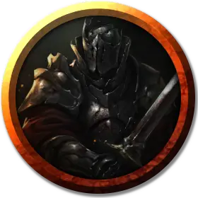

Рыцарь Чёрного меча (фанатик культа)
Knight of the Black Sword (Cult Fanatic)
Средний Гуманоид, любое мировоззрение кроме доброго

Класс Доспеха 13 (кожаный доспех)
Хиты 33 (6к8 + 6)
Скорость 30 футов
| мод | спас | ||
|---|---|---|---|
| СИЛ | 11 | +0 | +0 |
| ЛОВ | 14 | +2 | +2 |
| ТЕЛ | 12 | +1 | +1 |
| мод | спас | ||
|---|---|---|---|
| ИНТ | 10 | +0 | +0 |
| МДР | 13 | +1 | +1 |
| ХАР | 14 | +2 | +2 |
Навыки Обман +4, Религия +2, Убеждение +4
Чувства пассивное Восприятие 11
Языки Общий, Инфернальный
Опасность 2 (450 опыта)
Бонус мастерства +2
Особенности
Тёмная преданность. Фанатик совершает с преимуществом спасброски от испуга и очарования.
Смертельный лёд. Когда культист умирает, его труп замерзает на 9 дней, в течение которых его нельзя разморозить, повредить огнем, оживить или воскресить из мертвых.
Использование заклинаний. . Фанатик является заклинателем 4-го уровня. Его базовой характеристикой является Мудрость (Сл спасброска от заклинания 11, +3 к попаданию атаками заклинаниями). У него подготовлены следующие заклинания жреца:
• Заговоры (неограниченно): свет [light], священное пламя [sacred flame], чудотворство [thaumaturgy];
• 1 уровень (4 ячейки): нанесение ран [inflict wounds], приказ [command], щит веры [shield of faith];
• 2 уровень (3 ячейки): божественное оружие [spiritual weapon], удержание личности [hold person].
Амулеты из чардалина. Амулеты из чардалина, которые носят Рыцари Чёрного Меча, были извращены магией Левистуса. Заклинание обнаружение зла и добра [detect evil and good] или подобная магия покажет, что амулеты являются оскверненными объектами.
Каждый день на рассвете совершайте бросок к6 за каждый амулет из чардалина, которыми владеют персонажи. При результате "1" персонаж должен преуспеть в спасброске Сл 10 Харизмы, или его мировоззрение изменится на законно-злое, если у него было другое мировоззрение. Отведите игрока персонажа в сторону, чтобы описать, как он должен отыгрывать новое мировоззрение.
Законно-злой персонаж жаждет власти и пытается контролировать других, проявляя жестокость или манипулируя окружающими.
Изменение мировоззрения может быть отменено любой магией, снимающей проклятие, но по прошествию 9 дней его можно отменить только заклинанием исполнение желаний [wish] или божественным вмешательством.
Действия
Мультиатака. Фанатик совершает две рукопашные атаки.
Кинжал. . Рукопашная или дальнобойная атака оружием: +4 к попаданию, досягаемость 5 футов или дистанция 20/60 футов, одно существо. Попадание: 4 (1к4 + 2) колющего урона.
Описание
Рыцари Чёрного Меча - тайное общество культистов, поклоняющихся Левистусу, архидьяволу, правящему Стигией, шестым слоем Девяти Адов, из своей ледяной тюрьмы, из которой он не может сбежать.
Большинство культистов - уроженцы Долины Ледяного Ветра, которые погибли бы в снегах, если бы Левистус не помог им. Все рассказы культистов одинаковы: находясь при смерти от обморожения, в своих разумах они узрели архидьявола, протягивающего им руку и предлагающего второй шанс на жизнь в обмен на абсолютную преданность. После того, как они согласились следовать за Левистусом, их внимание привлекло бледное сияние в снегу поблизости, которое оказалось амулетом в форме меча из чардалина. Каждый из этих амулетов за счёт внутреннего излучения, защищал своего владельца от холода, тем самым помогая обладателю вернуться к цивилизации. Как только его владелец достигал Десяти Городов, талисман прекращал светиться, однако культисты хранят свои амулеты как знак своей преданности эрцгерцогу Стигии (см. ниже «Амулеты из Чардалина»).
Рыцари Чёрного Меча разбросаны по всем Десяти Городам. Они приветствуют новых членов и отвечают Левистусу, который иногда разговаривает с ними, используя мощную форму межпланарной телепатии. Левистус недавно призвал их помочь другому своему ученику (волшебнице альбиносу, тифлингше Алчность) достичь ее целей. Несмотря на то, что рыцари находят ее требовательной и неуживчивой, они не осмеливаются ей противоречить.
Левистус предупредил Рыцарей Чёрного Меча, что дуэргары замышляют разрушить Десять Городов. Он считает, что дуэргары действуют от имени Асмодея, Повелителя Ада и его адского тюремщика, но не поделился этой информацией с культом. Самая старая из ныне живущих членов культа, Хетил (щитовой дварф, потерявшая правую ногу из-за обморожения и носящая вместо неё деревяшку), ненавидит дуэргаров, как и большинство дварфов. Она убедила других членов культа заключить союзы со всеми, кто желает противостоять дуэргарам, включая банды авантюристов.
В замке Каэр расположена штаб-квартира культа. Наличие в нём культа – давно уже не секрет в Кер-Диневал, но местные жители предпочитают об этом не распространяться.